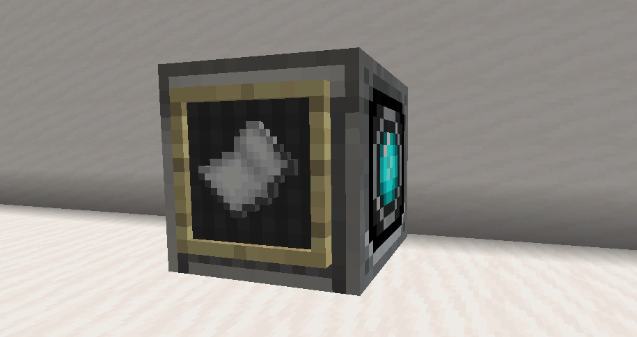
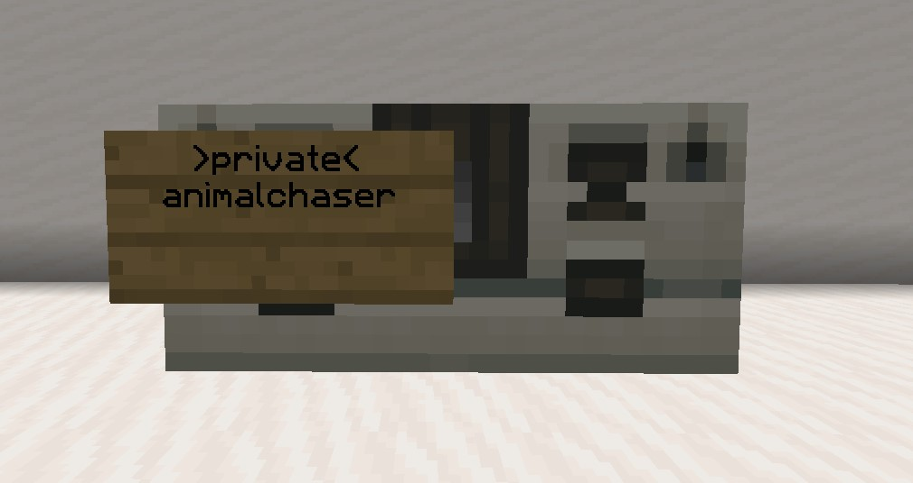
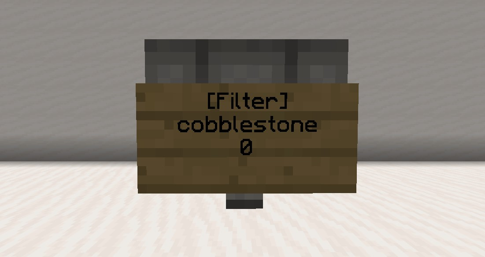
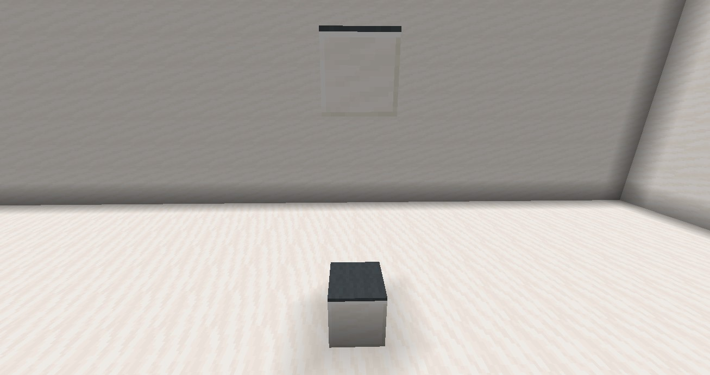
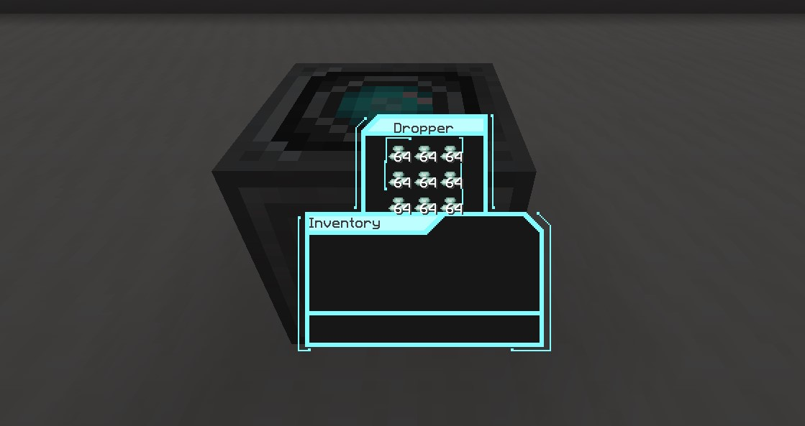

Home
Gadgets
Gadgets enhance vanilla mechanics and add a few of their own, such as teleportation.
Clockwork crafter
Clockwork crafters automatically craft items when supplied the ingredients, to make one place an item frame on a dropper and put the item you want to be crafted in the item frame.
Once supplied with ingredients, the item will be crafted once every second.
>private< signs
Private signs protect containers from other players by preventing them from being able to open or break them, they work on chests, barrels, furnaces, etc.
To make one write
Hopper filter
Hopper filters will stop any item that isn't on the sign from being picked up or moved by the hopper, to whitelist an item right-click the sign while holding it.
To make a hopper filter write
Elevator
Elevators allow you to quickly and easily move up/down, to use one stand on the gray carpet and press space/jump to go up or shift/crouch to go down, note that while there is no limit to how far elevators can be from each other, the further they are the longer it will take to teleport between them.
Aero-Electrolysis chamber

Aero-Electrolysis chambers are used in the production of gas canisters, note that gas collection only works on gas giants. (Saturn and Jupiter)
CryoVault
CryoVaults are a way of setting your spawn on ships so you can still respawn on them if you move the
ship, they also replace the usual 'home' system used on similar servers, use
By default, cryoVault '1' will act as your spawn point, to set your spawnpoint to a specific CryoVault just right-click the sign.
Sign text:
[Cryo]
Optical teleporter
Optical teleporters allow you to quickly teleport to certain points, to connect them use end rods, upon right-clicking the sign you will be instantly teleported to the lodestone.
To turn corners with end rods use pistons, like with resonant cables. Note that it is possible to connect
the
Sign text:
[Optic]
Mining beam
Mining beams are great for quarrying, when activated they will mine a 3x3 tunnel in the direction they are facing for 68 blocks, they consume 24 resonant crystals per use and cannot mine any block that the player who clicked the sign can't.
Sign text:
[Mining-Beam]
Shields
Shields provide protection against ship-to-ship weapons, with different weapon types either doing different amounts of damage, or bypassing them altogether, to make one just put prismarine crystals in a dropper, all blocks in a 15 block radius will be protected.
When a shield takes damage, prismarine crystals are taken from the dropper equal to the amount of damage resisted, once depleted the shield will deactivate and no longer protect the blocks in it's radius.
Shield projectors
Shield projectors are essentially extra powerful shields, protecting all piloted blocks in a 75-block radius, only one can be used per ship.
Each resisted attack will drain 12 prismarine crystals from the barrel.